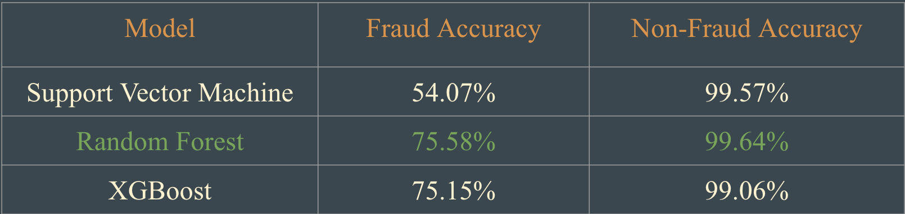
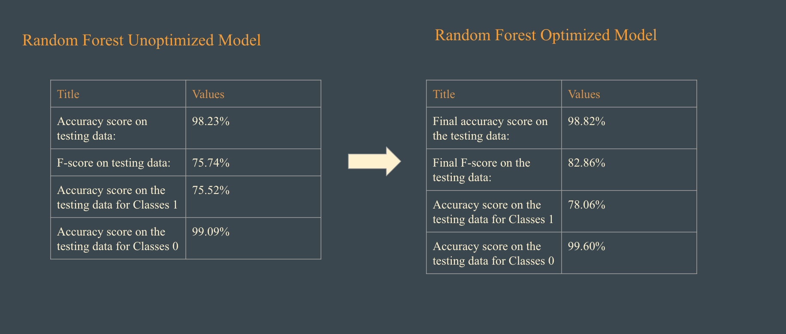
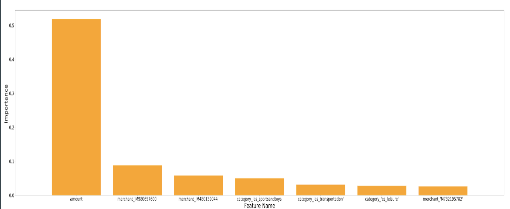
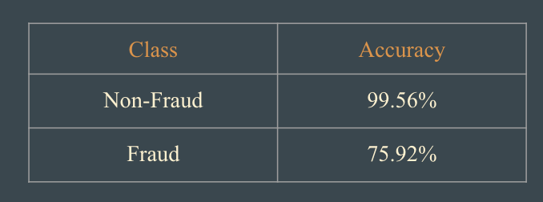
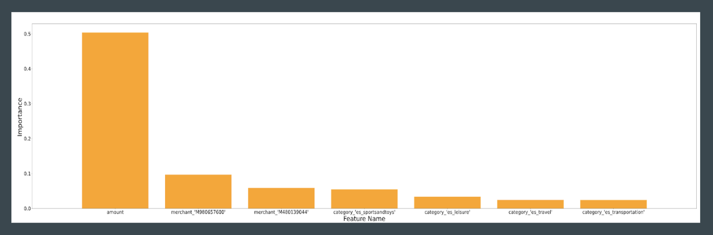

Baseline Model Metrics

Baseline Model Metrics with Hyper Parameter Optimization

Feature Importance of Random Forest Optimized Model

Optimized Random Forest with K-Means

Feature Importance of K-Means Model
